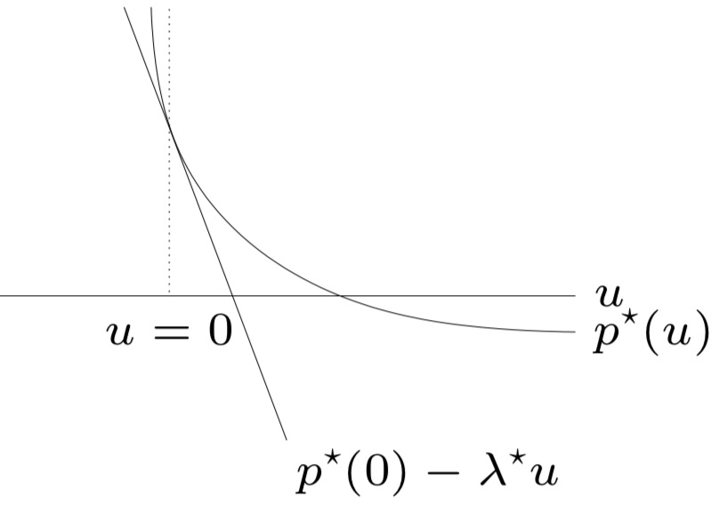

「凸优化」 对偶
本文最后更新于：1 分钟前
凸优化-对偶
对偶
Lagrange 对偶问题
Lagrange 函数
考虑标准形式的优化问题，拉格朗日函数定义为：
\[ \begin{aligned} &L:R^n\times R^m\times R^p\rightarrow R\\ &L(x, \lambda, \nu)=f_0(x)+\sum_{i=1}^m \lambda_if_i(x)+\sum_{i=1}^p \nu_ih_i(x)\\ \end{aligned} \]
- 定义域为：\(D\times R^m\times R^p\)
- 目标函数和约束函数的加权和
- \(\lambda_i\) 为第 i 个不等式约束的拉格朗日乘子
- \(\nu_i\) 为第 i 个不等式约束的拉格朗日乘子
Lagrange 对偶函数
\[ \begin{aligned} &g:R^m\times R^p\rightarrow R\\ &g=\inf_{x\in D} L(x,\lambda, \nu) \end{aligned} \]
- 函数 \(g\) 为凹函数（任何优化问题的 Lagrange 对偶函数为凹函数）
- \(\sup L(x,\lambda, \nu)\) 为凸函数
- 最优值下界：若 \(\lambda \ge 0\)，则 \(g(\lambda, \nu)\le p^ *\)（\(p^ *\) 为原优化问题最优值）
例：线性方程组的最小二乘解 \[ \begin{aligned} \min~~&x^Tx\\ s.t.~~&Ax=b \end{aligned} \] 下界性质：\(p^*\ge -\frac 1 4 \nu^TAA^T\nu-b^T\nu,\quad \forall \nu\)
例：标准形式的线性规划
下界性质：\(p^*\ge-b^T\nu,\quad if~A^T\nu +c\succeq 0\)
例：双向划分问题 \[ \begin{aligned} \min~~&x^TWx\\ s.t.~~&x_i^2=1,\quad i = 1,...,n \end{aligned} \] 下界性质：\(p^*\ge -\mathbf 1^T\nu, \quad if~W+\mathbf{diag}(\nu)\succeq 0\)
Lagrange 对偶函数与共轭函数
共轭函数 \(f^*=\sup_{x\in D}(y^Tx-f(x))\)
而对偶函数满足：

若已知共轭函数，可以简化对偶函数的表达
例如：熵的最大化
对偶问题
\[ \begin{aligned} \max~~&g(\lambda,\nu)\\ s.t.~~&\lambda\succeq 0 \end{aligned} \]
- 凸优化问题的最优值表示为 \(d^*\)
- 通过 Lagrange 对偶函数获取 \(p^*\) 的最佳下界
- 凸优化问题：\(d^*\le p^*\)
例：线性规划 \[ \begin{aligned} \min.&c^Tx\\ s.t.&Ax=b\\&x\succeq 0 \end{aligned} \]
对偶问题为：
\[ \begin{aligned} \max.&-b^Tv\\ s.t.&A^Tv+c\succeq0 \end{aligned} \]
对于一个线性规划问题，其对偶问题也是线性规划问题
弱对偶与强对偶
Thm（弱对偶）对于凸优化和非凸优化都有：\(d^*\le p^*\)
- 可以⽤来寻找困难问题的⾮平凡下界
Thm（强对偶）对偶间隙 \(p^*-d^* =0\)
- 并非总是满足，但在凸优化问题中常常满足
凸优化问题中保证强对偶的条件称为约束准则。
几何解释
考虑只有一个约束 \(f_1(0)\le 0\) 的问题
定义集合：\(G=\{(f_0(x),f_1(x)|x\in D\}\)

如果是凸的：
最优性条件
Def（相对内部）\(\mathrm{Rel~int}~D=\{x\in D|B(x,r)\cap\mathrm{aff~}D\sub D,\exist r>0\}\)
Slater 约束准则
Thm：若某个凸优化问题中，存在一点 \(x\in \mathrm{relint}~D=\{x\in D|B(x,r)\cap \mathrm{aff}D\subset D\}\) 使得该问题是严格可行的（\(x\in relint~D,f_i(x)<0,Ax=b\)）则为强对偶问题。
弱化后：若不等式约束时仿射的，只要可行域非空，则必有\(d^*=p^*\)
KKT 最优性条件
KKT 条件
一般可微优化问题，对偶间隙为 0 需要满足 KKT 条件，包含以下四个部分：
- （互补松弛性）\(\lambda^*_if_i(x^*)=0\)
- （原始可行性）\(f_i(x)\le 0, h_i(x)=0\)
- （对偶可行性）\(\lambda_i\ge 0\)
- （稳定性条件）\(\displaystyle\frac{\partial}{\partial x}L(x,\lambda,\nu)=0\)
例：注水
互补松弛性
若对偶问题满足 \(p^*=d^*\) 且所有函数可微，则最优解满足： \[ \lambda_i^*f_i(x^*)=0 \]
稳定性
\[ \inf L=L(x^*,\lambda^*,\nu^*) \]
则： \[ \frac{\partial L(x,\lambda^*,\nu^*)}{\partial x}|_{x=x^*}=0 \]
对偶、问题重形式化
常用方法：
- 引入新的变量和对应的约束
- 将显示约束转换为隐式表达（反之亦然）
- 变换目标或约束函数变换
引入新的变量和对应的约束
例如：\(\min~~f_0(Ax+b)\)
对偶问题：\(g=\inf_xf_0(Ax+b)=p^*\)
重形式化后： \[ \begin{aligned} \min~~&f_0(y)&\\ s.t.~~&Ax+b-y=0&\\ \rightarrow~~ &g(\nu)= \begin{cases} -f_0^*(\nu)+b^T\nu &A^T\nu = 0\\ -\infty&otherwise \end{cases} \end{aligned} \] 例：范数逼近问题 \[ \begin{aligned} \min~~&\|Ax-b\|\\ \rightarrow\min~~&\|y\|\\ s.t.~~&y=Ax-b \end{aligned} \]
隐式约束
例如：带框的线性规划

扰动、灵敏度分析
优化问题及其对偶问题的形式为：

则其扰动问题及其对偶
其中，\(x\) 为原问题的优化变量，\(u,~v\) 为参数
得到的 \(p^*(u,v)\) 为最优值，是 \(u\) 和 \(v\) 的函数
扰动问题的性质
Thm：若原问题是凸的，则 \(p^*(u,v)\) 是凸函数
Thm：若原问题为凸，且对偶间隙为 0，\(\lambda^*,w^*\) 为原问题的最优解，则：\(p^*(u,v)\ge p^*(0,0)-\lambda^{*T}u-w^{*T}v\)
灵敏度分析
\(p^*(u,v)\ge p^*(0,0)-\lambda^{*T}u-w^{*T}v\)
局部灵敏度分析
Thm：若原问题是凸的，且强对偶性成立， \(p^*(u,v)\) 在 \((0,0)\) 可微，则有 \[ \lambda_i^*=-\frac{\partial p^*(0,0)}{\partial u_i},\quad \nu_i^*=-\frac{\partial p^*(0,0)}{\partial v_i} \] 
广义不等式

- 不等式约束的 Lagrange 乘子为向量 \(\lambda_i\in R^{k_i}\)
- 拉格朗日函数为：\(L=f_0(x)+\sum_{i=1}^m\lambda_i^Tf_i(x)+\sum_{i=1}^p\nu_ih_i(x)\)
Thm（下界性质）若 \(\lambda_i\succeq_{K_i^*}0\) 则 \(g\le p^*\)
例：半定规划